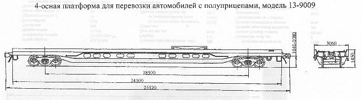

Назначение: для перевозки автомобилей с полуприцепами
Параметры
| Номер проекта | 9009.00.000 |
| Технические условия | ТУ 24.05.16.037-96 |
| Модель вагона | 13-9009 |
| Тип вагона | |
| Изготовитель | АО "Абаканвагонмаш" |
| Грузоподъемность, т груз-автомобиль с полуприцепом |
44 |
| груз-контейнеры | 60 |
| груз-полуприцеп | 36 |
| равномерно-распределенный груз | 52 |
| Масса тары вагона, т | 33,5 |
| Нагрузка: статическая осевая, кН(тс) |
209,48(21,375) |
| погонная, кН/м(тс/м) | 32,83(3,35) |
| Скорость конструкционная, км/ч | 120 |
| Габарит | 0-ВМ(01-Т) |
| База вагона, мм | 18500 |
| Длина, мм: по осям сцепления автосцепок |
25520 |
| по концевым балкам рамы | 24500 |
| Ширина максимальная, мм | 3060 |
| Высота от уровня верха головок рельсов, мм: максимальная |
1450 |
| до уровня пола | 1200 |
| Количество осей, шт. | 4 |
| Модель 2-осной тележки | 18-100 |
| Наличие переходной площадки | нет |
| То же с ручным тормозом | нет |
| Наличие стояночного тормоза | есть |
| Количество упоров для крепления контейнеров, шт.: опрокидывающихся |
12 |
| стационарных | |
| Размеры пола, мм: длина |
24300 |
| ширина | 2640 |
| Площадь, м2 | 74,36 |
| Удельная площадь, м2/т | 1,43 |
| Год постановки на серийное производство | 1996 |
| Возможность установки буфера | нет |